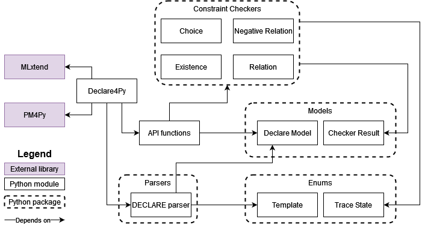

Declare4Py Overview
Declare4Py is composed of several Python modules/packages shown in the figure below along with their dependencies.
We provide a brief description of each module/package:
MLxtend is Machine Learning library with extended functionalities with respect to the standard SKlearn and Scipy libraries. Declare4Py uses the Apriori and FP-growth algorithms for computing frequent itemsets and other functionalities for encoding the logs.
PM4Py is a standard and well-known library for process mining. Declare4Py uses some funcionalities for log importing.
Declare4Py is the access point for the users to the library. This module contains the main methods for log analysis and for the main process mining tasks (conformance checking, model discovery and query checking) explained in the other tutorials.
API functions contain the functions that actually perform the conformance checking, discovery and query checking tasks..
Parsers perform the parsing of the
.declfiles containing the Declare models.Constraints Checkers is the core package of Declare4Py as it provides methods for computing the checking of the families of Declare constraints given a trace.
Models contain modules that define the modelling of some entities of Declare4Py. In particular, Declare Model defines attributes and methods for a Declare model, whereas Checker Result defines attributes and methods for the results of the constraint checking.
Enums contain useful constants for the Declare templates and for the truth state of a trace according to a Declare constraint.
[ ]: